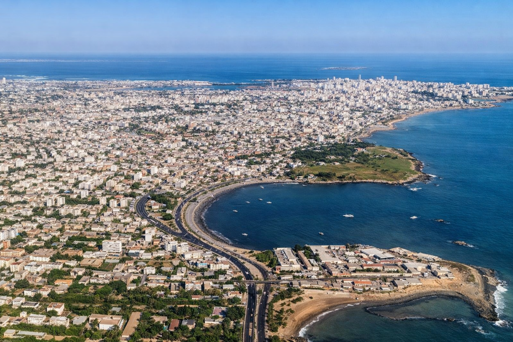

Dakar
12.5k
Île de Gorée
Patrimoine Mondial de l'UNESCO

RetourTerre de la Teranga, carrefour des cultures et de l'hospitalité
Situé à la pointe la plus à l'ouest de l'Afrique, le Sénégal est une destination aux multiples facettes. Entre le dynamisme de Dakar, l'émotion de l'île de Gorée, la quiétude de la Casamance et la magie du désert de Lompoul, le "pays de la Teranga" vous promet une immersion inoubliable dans une Afrique authentique et accueillante.
Explorez les 15 sites incontournables du Sénégal
Patrimoine Mondial de l'UNESCO

Eaux salines et couleurs magiques

L'élégance coloniale et le jazz

Labyrinthe de mangroves et d'oiseaux

Les plus belles plages d'Afrique de l'Ouest

Dunes oranges et nuits étoilées

Le plus grand parc national du pays

Safari à proximité de Dakar
Surplombant la capitale
Joal-Fadiouth, harmonie et traditions

3ème sanctuaire ornithologique au monde

Cœur spirituel de la Mouridiyya
Vestiges coloniaux en bord de fleuve

Surf, art et détente à Dakar

Traditions ancestrales et collines
La Teranga : Plus qu'un mot, un mode de vie.
Le Sénégal est une terre de dialogue et de métissage. Son histoire, marquée par l'empire du Djolof et la période coloniale, a forgé une identité forte où la musique, la poésie et la danse occupent une place centrale. De Léopold Sédar Senghor à Youssou N'Dour, le Sénégal rayonne mondialement par son génie créatif.
L'hospitalité sénégalaise légendaire qui fait que chaque étranger se sent immédiatement chez lui.
Le rythme du Sabar et la parole sacrée des Griots perpétuent l'histoire et les valeurs sociales.
Un héritage intellectuel riche porté par de grands penseurs et écrivains reconnus internationalement.
Un modèle exemplaire de tolérance et de paix entre les différentes confréries et religions.

Ramenez un morceau de la Teranga chez vous. Des créations authentiques qui soutiennent nos communautés locales.
 En stock
En stock
Paniers tressés à la main avec des fibres naturelles, colorés et résistants.
 En stock
En stock
Tissu teinté à la main avec des motifs traditionnels uniques.
 En stock
En stock
Le savoir-faire ancestral des bijoutiers de Saint-Louis et de Dakar.
Art populaire sénégalais illustrant la vie quotidienne et les légendes.
Maroquinerie de haute qualité faite à partir de cuir local tanné naturellement.

Corniche Ouest, Dakar

Sea Plaza, Dakar

Saly Portudal

Île de Saint-Louis

Cap Skirring, Casamance

Désert de Lompoul
Considérée comme l'une des meilleures d'Afrique, la cuisine sénégalaise est un savant mélange de saveurs terrestres et maritimes. Le Thiéboudienne, classé à l'UNESCO, en est le joyau.

Riz au poisson et légumes, le plat national sacré.

Poulet mariné au citron vert et aux oignons fondants.
Viande mijotée dans une onctueuse sauce à l'arachide.
Ragoût de viande ou poisson à la tomate et farine de mil.
Sauce onctueuse aux gombos et huile de palme.
Petits chaussons frits farcis au poisson épicé.
Grillades d'agneau au feu de bois avec épices et oignons.
Plat de fête léger et parfumé aux raisins secs.
Poisson poché servi avec du riz et une sauce citronnée.
Bouillie de mil servie avec du lait caillé sucré.
Infusion d'hibiscus rouge, rafraîchissante et tonique.
Boisson onctueuse à base de fruit de baobab.
Le Sénégal vibre au rythme de sa créativité. Voici les rendez-vous à ne pas manquer :
Le plus grand rendez-vous de l'art contemporain africain.
Festival international de jazz mythique sur l'île de Saint-Louis.
Pèlerinage annuel massif célébrant le départ en exil de Cheikh Ahmadou Bamba.
Le Sénégal jouit d'un climat agréable une grande partie de l'année.
C'est la période idéale. Les températures sont douces (25°C), le ciel est bleu et l'air est sec. Parfait pour les plages et les safaris.
Saison des pluies. Les paysages deviennent d'un vert éclatant, surtout en Casamance. Les pluies sont souvent fortes mais brèves.
Pays stable et sûr. Prudence classique dans les zones touristiques contre les petits vols.
Traitement antipaludéen conseillé. Vaccin Fièvre Jaune recommandé. Buvez de l'eau capsulée.
Franc CFA (XOF). Les cartes bancaires sont acceptées dans les grands hôtels et restaurants.
Le Français est la langue officielle. Le Wolof est la langue nationale la plus parlée.
Expert Dakar & Gorée
Moussa vous fera revivre l'histoire de Gorée et les secrets cachés de la capitale avec une émotion rare.
Spécialiste Nature & Saloum
Fatou connaît chaque bras de mer du Saloum et saura vous faire découvrir la faune ornithologique locale.
Guide Aventure Casamance
Spécialiste du sud, Ibrahima vous emmène au cœur des villages Diola pour une immersion culturelle totale.